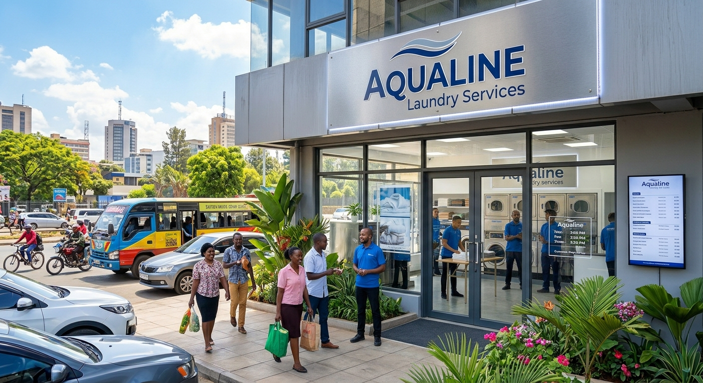

About Aqualine Laundry
Aqualine laundry was started in December 2023, by Brandon Ochieng and Jama Bashir.
Aqualine Laundry was conceptualized to address the heavy reliance on manual, paper-based record-keeping in local laundry and dry-cleaning small-and-medium enterprises (SMEs).
By shifting to our digital web application, businesses eliminate garment mix-ups, missing paper slips, and delayed tracking—delivering total peace of mind to our customers.

Core Principles
- Transparent Garment Tracking
- Data Privacy & Security
- Seamless M-Pesa Integration